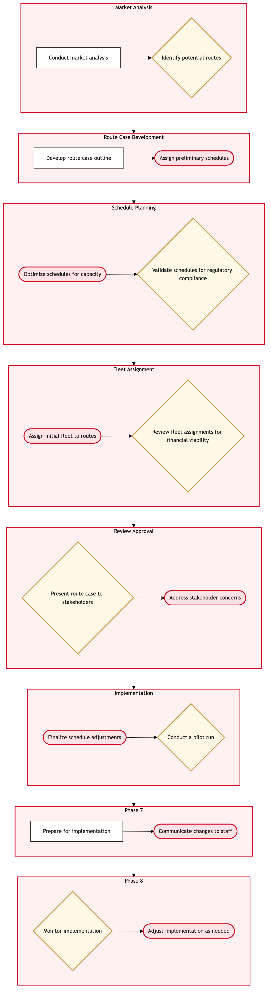

Updated 2026-08-20
Long-Range Network Strategy and Route Case Development
Process flow
Click to zoom

Process steps
▼
Phase 1 — Market Analysis & Strategy Development
3 steps
| Step | Activity | Role | System | Input | Output | KPI | Dec | Exc | Pain point |
|---|---|---|---|---|---|---|---|---|---|
| 1.1 | Conduct market analysis | Network Planning Analyst | Lufthansa Systems NetLineB | Market data, competitor schedules | Market analysis report | Completion within 2 weeks | N | N | Inaccurate market data from third-party sources. |
| 1.2 | Develop initial network strategy | Network Planning Manager | Lufthansa Systems NetLine/PlanU | Market analysis report | Initial network strategy draft | Completion within 3 weeks | Y | N | Resource constraints in developing new routes. |
| 1.3 | Refine network strategy | Network Planning Analyst | Lufthansa Systems NetLine/PlanU | Initial network strategy draft, resource availability data | Refined network strategy | Completion within 1 week | N | N | Time-consuming optimization of route schedules. |
▼
Phase 2 — Route Case Preparation
3 steps
| Step | Activity | Role | System | Input | Output | KPI | Dec | Exc | Pain point |
|---|---|---|---|---|---|---|---|---|---|
| 2.1 | Prepare route case documentation | Route Case Coordinator | Lufthansa Systems NetLine/PlanU | Refined network strategy | Route case document | Completion within 2 weeks | N | Y | Inconsistent data entry across different systems. |
| 2.2 | Conduct internal review | Network Planning Team Lead | Lufthansa Systems NetLine/PlanU | Route case document | Internal review comments | Completion within 1 week | Y | N | Complexity in aligning different stakeholder interests. |
| 2.3 | Obtain final approval from VP of Network Planning | VP of Network Planning | Lufthansa Systems NetLine/PlanU | Internal review comments, route case document | Approval letter | Completion within 2 weeks | Y | N | Delays in obtaining senior management approval. |
▼
Phase 3 — Regulatory Compliance Review
3 steps
| Step | Activity | Role | System | Input | Output | KPI | Dec | Exc | Pain point |
|---|---|---|---|---|---|---|---|---|---|
| 3.1 | Resolve data inconsistencies | Data Analyst | Lufthansa Systems NetLine/PlanU | Route case document, internal review comments | Corrected route case document | Completion within 1 week | N | Y | System integration issues between NetLine and Plan. |
| 3.2 | Engage with regulatory bodies for compliance review | Regulatory Compliance Officer | Lufthansa Systems NetLine/PlanU | Corrected route case document, approval letter | Compliance report | Completion within 4 weeks | Y | N | Complex regulatory requirements and changing regulations. |
| 3.3 | Obtain compliance certification | Regulatory Compliance Officer | Lufthansa Systems NetLine/PlanU | Compliance report | Compliance certificate | Completion within 2 weeks | N | Y | Delays in regulatory body response times. |
▼
Phase 4 — Stakeholder Engagement
2 steps
| Step | Activity | Role | System | Input | Output | KPI | Dec | Exc | Pain point |
|---|---|---|---|---|---|---|---|---|---|
| 4.1 | Engage with key stakeholders for feedback | Stakeholder Engagement Manager | Lufthansa Systems NetLine/PlanU | Corrected route case document, compliance certificate | Stakeholder feedback report | Completion within 3 weeks | Y | N | Diverse stakeholder interests and expectations. |
| 4.2 | Address stakeholder feedback | Route Case Coordinator | Lufthansa Systems NetLine/PlanU | Stakeholder feedback report, corrected route case document | Updated route case document | Completion within 2 weeks | N | Y | Resource allocation for addressing feedback. |
▼
Phase 5 — Final Approval & Implementation
2 steps
| Step | Activity | Role | System | Input | Output | KPI | Dec | Exc | Pain point |
|---|---|---|---|---|---|---|---|---|---|
| 5.1 | Present final route case to senior management | VP of Network Planning | Lufthansa Systems NetLine/PlanU | Updated route case document, compliance certificate | Senior management approval | Completion within 2 weeks | Y | N | Senior management's decision-making process can be slow. |
| 5.2 | Implement network changes | Network Operations Control Duty Manager | Lufthansa Systems NetLine/PlanU | Senior management approval, updated route case document | Implemented network schedule | Completion within 4 weeks | Y | N | Operational challenges in implementing changes. |
▼
Phase 6 — Monitoring & Adjustment
3 steps
| Step | Activity | Role | System | Input | Output | KPI | Dec | Exc | Pain point |
|---|---|---|---|---|---|---|---|---|---|
| 6.1 | Monitor network performance | Network Performance Analyst | Lufthansa Systems NetLine/PlanU | Implemented network schedule | Performance report | Completion within 1 week | Y | N | Variability in network performance metrics. |
| 6.2 | Adjust network strategy based on performance | Network Planning Analyst | Lufthansa Systems NetLine/PlanU | Performance report, implemented network schedule | Adjusted network strategy | Completion within 2 weeks | N | Y | Resource constraints in making adjustments. |
| 6.3 | Reimplement adjusted network schedule | Network Operations Control Duty Manager | Lufthansa Systems NetLine/PlanU | Adjusted network strategy, implemented network schedule | Reimplemented network schedule | Completion within 4 weeks | N | Y | Operational challenges in reimplementing changes. |
Swim lanes
Network Planning Analyst1.1 1.3 6.2
Network Planning Manager1.2
Route Case Coordinator2.1 4.2
Network Planning Team Lead2.2
VP of Network Planning2.3 5.1
Data Analyst3.1
Regulatory Compliance Officer3.2 3.3
Stakeholder Engagement Manager4.1
Network Operations Control Duty Manager5.2 6.3
Network Performance Analyst6.1
Systems touched
Lufthansa Systems NetLineBLufthansa Systems NetLine/PlanU
Key performance indicators
- Market analysis report completion within 2 weeks
- Initial network strategy development within 3 weeks
- Route case documentation preparation within 2 weeks
- Internal review comments received within 1 week
- Compliance certification obtained within 2 weeks
Risks and control points
- Resource constraints in developing new routes
- Inconsistent data entry across different systems
- Complexity in aligning different stakeholder interests
- System integration issues between NetLine and Plan
- Delays in obtaining senior management approval
Air Canada Process Wiki — process and systems reference compiled from public sources
for IT Application Management and User Support pre-sales discovery.
Built 2026-08-21. Every system carries an evidence tier: tier C is an industry pattern and tier U is an open
question, and neither should be asserted as fact about Air Canada without confirmation in discovery.
Not affiliated with or endorsed by Air Canada. Air Canada, Aeroplan and Altitude are trademarks of Air Canada.